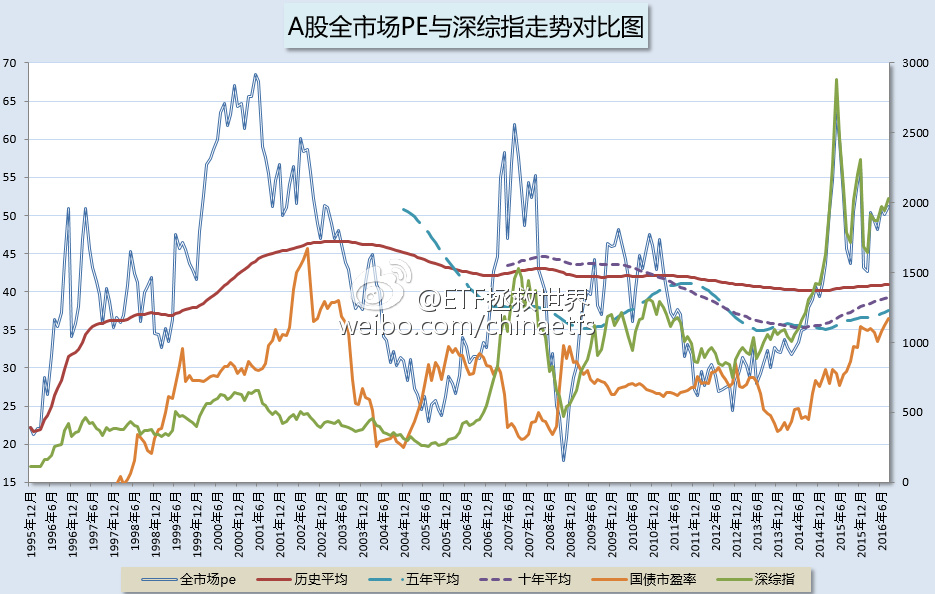

现在的情况真的和2002年太像了。
注意02年十年期国债市盈率（橘黄色）与估值的对应关系，再看现在。有一个共同点都是前一年股市疯涨估值疯狂后，利率水平大幅下降，全市场估值再度疯涨。A股有史以来仅此两次。这次之所以没有像07年一样一路下去，固然有某些资金维稳的原因，无风险利率不断下降也有很大的关系。（07年底债券收益率高到做梦都会笑醒）
然而，未来呢？除非你和02年一样把十年期市盈率打到45以上，也就是十年期收益率接近2.1，估值恐怕会再次疯狂到60。否则，呵呵。央行重启十四天逆回购就能吓得市场喝一壶。一个字，脆弱。
PS，这不算发图，只是讨论一下历史估值和无风险收益率的关系而已。
注意02年十年期国债市盈率（橘黄色）与估值的对应关系，再看现在。有一个共同点都是前一年股市疯涨估值疯狂后，利率水平大幅下降，全市场估值再度疯涨。A股有史以来仅此两次。这次之所以没有像07年一样一路下去，固然有某些资金维稳的原因，无风险利率不断下降也有很大的关系。（07年底债券收益率高到做梦都会笑醒）
然而，未来呢？除非你和02年一样把十年期市盈率打到45以上，也就是十年期收益率接近2.1，估值恐怕会再次疯狂到60。否则，呵呵。央行重启十四天逆回购就能吓得市场喝一壶。一个字，脆弱。
PS，这不算发图，只是讨论一下历史估值和无风险收益率的关系而已。
- 